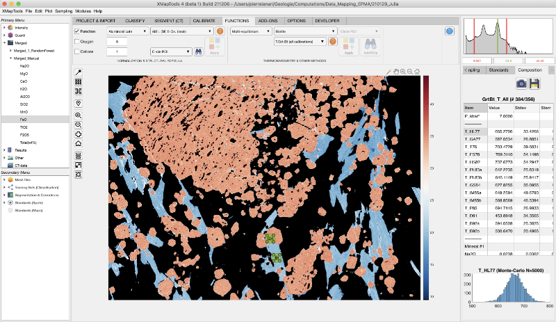

Help file version 11.01.2024 by M. Tedeschi & P. Lanari
Table of content
Normalisation & Structural Formula
Export Mineral Composition and Structural Formula
Thermobarometry & Other Methods
- Map-mode
- Multi-equilibrium
This help file contains a description of the tools available in the Functions section.
Several functions are taken from J. Laughton's PTtoolbox.
These tools allow the calculation of structural formula maps expressed in atoms per formula unit (apfu) for selected minerals (see Fig. 1). Select a Quanti file from the Quanti category in the primary menu to activate these tools.
Three modes are available:
Select the mode and either select a function from the menus or set the number of oxygen or cations to be used for normalisation.
The Apply (Apply the Selected Function (Structural Formula)) button calculates a structural formula and saves the results under a new entry in the Results category of the Primary Menu. To view the result, expand the menu by clicking on the arrow to the left of the mineral name and select a map.
button calculates a structural formula and saves the results under a new entry in the Results category of the Primary Menu. To view the result, expand the menu by clicking on the arrow to the left of the mineral name and select a map.
Figure 1: Normalisation and structural formula tools.
It is possible to export average mineral composition and the corresponding structural formula.
Select a Quanti file and display an element (e.g. CaO in plagioclase in Fig. 2). This selection activates the export mode available in the Functions section. Select the structural formula function to be applied (see above). Then select a ROI shape from the drop down menu (circle, rectangle or polygon).
The Add ROI for Exporting Compositions button activates the drawing mode. Draw a ROI and average mineral composition. The results are displayed in the live display module. The ROI can be edited and the results updated.


External functions not related to structural calculations are available here. These are divided into two categories:
Select a Quanti file from the Primary Menu and activate the Map Mode. Select the mineral from the second drop down menu and the calibration from the third. An example is shown in Figure 4.
The Apply (Apply the Selected Function (other))  button applies the selected function and saves the results under a new entry in the Results category of the Primary Menu. To view the result, expand the menu by clicking on the arrow to the left of the mineral name and select a map.
button applies the selected function and saves the results under a new entry in the Results category of the Primary Menu. To view the result, expand the menu by clicking on the arrow to the left of the mineral name and select a map.
Select a merged map from the Primary Menu and activate the Multi-Equilibrium mode. This mode is only available for merged maps as it requires the composition of multiple minerals. Note that it is possible to create a merged map with a limited number of minerals (in Calibrate).
Select a mineral from the second drop down menu and the calibration from the third. An example is shown in Figure 5 below.
Each function name contains the variable to be calculated and the mineral pair. The order of the mineral pair (e.g. Grt-Bt) is important because the minerals must be selected in that particular order.
The Apply (Apply selected function (other)) button activates the drawing mode. Select multiple ROI for the minerals in the order given in the function name. The results are displayed in a table in the live display module.

Figure 5: Example of temperature calculation for the garnet-biotite pair. Note that a merged map is displayed. The multi-equilibrium has been activated, the mineral biotite has been selected and the function T.Grt-Bt (all calibrations) has been selected. In this case garnet (Grt) must be selected first and biotite (Bt) second. The results are displayed in the live display module on the right.